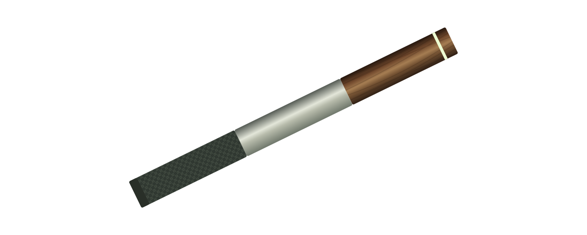
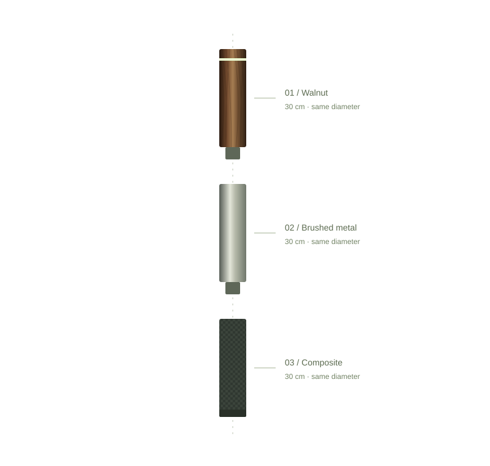

THE MODERN STICK · A DESIGN CONCEPT
Carry a little
wonder.
Natural walnut. Quiet technology.
An ancient object, thoughtfully reimagined.

FAMILIAR. AND ENTIRELY DIFFERENT.
A timeless gesture.
A new point of view.
For wanderers, thinkers, and the simply curious.
Motick brings presence back to the everyday — with real wood in your hand and a little possibility inside.
BEAUTY, ALL THE WAY THROUGH.
Three materials.
One continuous line.
Three sections. 30 cm each.
A 90 cm form, with one consistent diameter.

An illustrative view of the proposed components.
Uniform outer diameter
Warmth, at the top.
The upper 30 cm section in natural walnut. A warm place for your hand, with the concept light and discreet control integrated into the same uninterrupted profile.
Illustrative modular concept. Three 30 cm sections form a 90 cm shaft. Joining details, tolerances, and structural performance are not validated engineering.
NATURE DOESN’T REPEAT ITSELF.
Warm to hold.
Hard to put down.
Walnut gives the familiar form its warmth. The grain is the detail — never a pattern to be perfected, always a character to discover.
Material direction: natural black walnutEvery line, its own.
LESS INTERFACE. MORE INSTINCT.
Technology.
With a lighter touch.
The idea is simple: a glow when you need it. A subtle response you can feel. A single control that keeps you in the moment.
Living light
A diffused crown, conceived as a quiet signal.
Subtle feedback
Motion and haptics, explored without a screen.
Proposed interactions. Performance has not been validated.
DESIGNED FOR THE LONG WALK.
Different by nature.
Equal by design.
Three distinct materials. Three equal sections.
One clean line, from hand to ground.
Exactly three end-to-end 30 cm sections. A total assembled length of 90 cm, with a consistent outer diameter.
Walnut at the top. Brushed metal in the middle. Dark composite below. Material changes; the diameter stays the same.
Motick is a design exploration. Joining and load performance remain to be developed. Pricing and availability are not announced.
Not available to order. No reservation or mailing list is currently open.